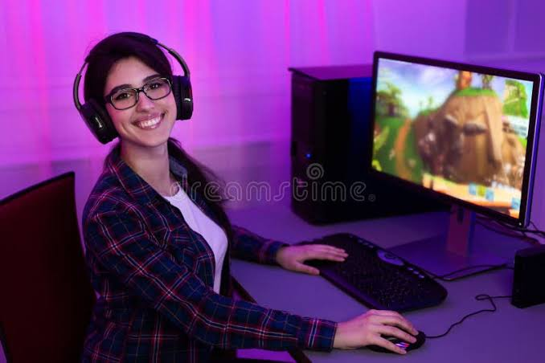

Maya

Maya, a small creator looking to grow
Maya is 24 and lives in Manchester, England. She streams variety games on Twitch four nights a week, mostlyARPGs and looter shooters, and averages about 25 concurrent viewers. She has a dry, sarcastic sense of humor and a small, close-knit community she is protective of. She is a big fan of charity streams.
Maya works full time as a retail supervisor and streams in the evenings UK time. She regularly collabs with two or three online friends but feels uncomfortable approaching anyone else. She worries that messaging bigger creators looks like she is "using" them for growth. She also worries that her humor will be misread by people who don't know her. Maya has a college diploma in digital media. She is comfortable with streaming software, Discord and Twitter but has no technical background beyond that.